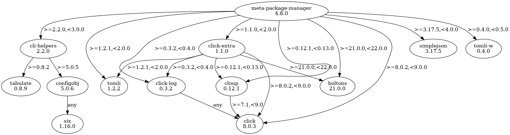

Installation#
Easiest way is to use pipx:
$ pipx install meta-package-manager
pipx is to pip what npx is to npm: a clean way to install and run Python applications in isolated environments.
You can install the latest stable release and its dependencies with a simple pip
call:
$ python -m pip install meta-package-manager
On some system, due to the Python 2.x to 3.x migration, you’ll have to call python3 directly:
$ python3 -m pip install meta-package-manager
Other variations includes:
$ pip install meta-package-manager
$ pip3 install meta-package-manager
If you have difficulties to use pip, see
pip’s own installation instructions.
An mpm formula has been contributed by @Hasnep and is available at hasnep/tap/meta-package-manager:
$ brew install hasnep/tap/meta-package-manager
Broken Homebrew
If for any reason brew gets broken by this external repository, you can easely fix it running:
$ brew untap hasnep/tap
$ brew install hasnep/tap/meta-package-manager
An mpm package has been contributed by @autinerd and is available on AUR:
$ paru -S meta-package-manager
$ yay -S meta-package-manager
In a funny twist, mpm can be installed by itself:
$ mpm --brew install meta-package-manager
$ mpm --paru install meta-package-manager
$ mpm --pip install meta-package-manager
$ mpm --pipx install meta-package-manager
$ mpm --yay install meta-package-manager
Danger: Misleading package name
There is a mpm Python module on PyPi that has nothing to do with this project. Avoid it!
The real package is named meta-package-manager. Only the latter provides the mpm CLI
you’re looking for.
Run mpm#
Meta package manager should now be available system-wide:
$ mpm --version
mpm, version 4.13.0
(...)
If not, you can directly execute the module from Python:
$ python -m meta_package_manager --version
mpm, version 4.13.0
(...)
Or on some systems:
$ python3 -m meta_package_manager --version
mpm, version 4.13.0
(...)
Password prompts and sudo#
The majority of package managers on Linux requires sudo to perform system-wide operations.
On other OSes you’ll be prompted to enter your password to install kernel extensions:
$ brew install --cask macfuse
==> Caveats
macfuse requires a kernel extension to work.
If the installation fails, retry after you enable it in:
System Preferences → Security & Privacy → General
For more information, refer to vendor documentation or this Apple Technical Note:
https://developer.apple.com/library/content/technotes/tn2459/_index.html
==> Downloading https://github.com/osxfuse/osxfuse/releases/download/macfuse-4.2.5/macfuse-4.2.5.dmg
Already downloaded: /Users/kde/Library/Caches/Homebrew/downloads/d7961d772f16bad95962f1a780b545a5dbb4788ec6e1ec757994bb5296397b1c--macfuse-4.2.5.dmg
==> Installing Cask macfuse
==> Running installer for macfuse; your password may be necessary.
Package installers may write to any location; options such as `--appdir` are ignored.
Password:
Both cases are not handled gracefully by mpm, which doesn’t support (yet) interactive password management and capture.
A workaround on Linux is to install mpm with sudo, so you’ll be able to invoke it with sudo too:
$ sudo python3 -m pip install meta-package-manager
(...)
$ sudo python3 -m meta_package_manager upgrade
(...)
Shell completion#
Completion for popular shell rely on Click feature.
Add this to ~/.bashrc:
eval "$(_MPM_COMPLETE=bash_source mpm)"
Add this to ~/.zshrc:
eval "$(_MPM_COMPLETE=zsh_source mpm)"
Add this to ~/.config/fish/completions/mpm.fish:
eval (env _MPM_COMPLETE=fish_source mpm)
Alternatively, export the generated completion code as a static script to be executed:
$ _MPM_COMPLETE=bash_source mpm > ~/.mpm-complete.bash
Then source it from ~/.bashrc:
. ~/.mpm-complete.bash
$ _MPM_COMPLETE=zsh_source mpm > ~/.mpm-complete.zsh
Then source it from ~/.zshrc:
. ~/.mpm.zsh
_MPM_COMPLETE=fish_source mpm > ~/.config/fish/completions/mpm.fish
Python dependencies#
FYI, here is a graph of Python package dependencies:
